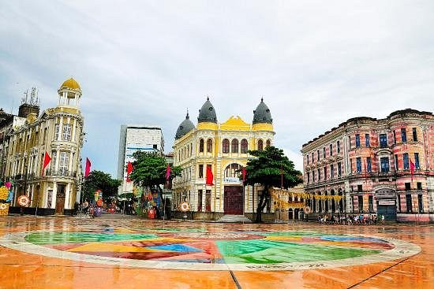

Você já ouviu falar sobre o Marco Zero?
Se liga:
A Praça Rio Branco, também conhecida como Marco Zero, é um espaço público localizado no bairro do Recife da cidade homônima, capital de Pernambuco. O local fica próximo ao Porto do Recife e abriga o Marco Zero da cidade do Recife. É deste marco que são feitas todas as medidas oficiais de distâncias rodoviárias locais.
Cinfira abaixo algumas fotos do Marco Zero:

Caso queira conhecer outros lugares do Recife, veja as opções clicando aqui:
Recife por EuroTour: